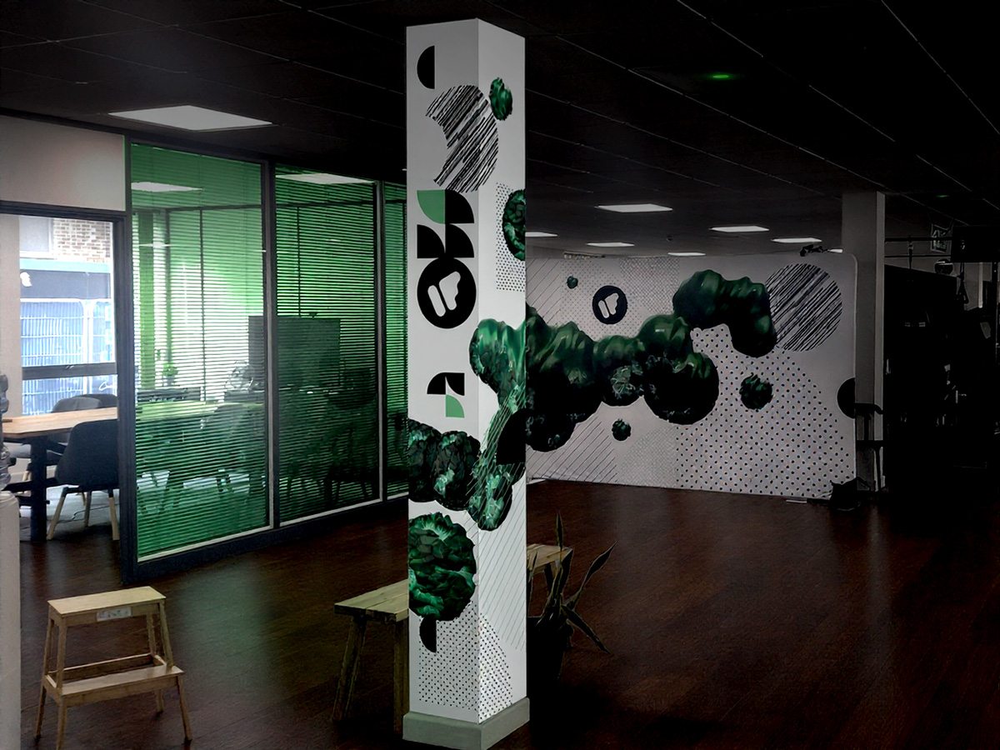
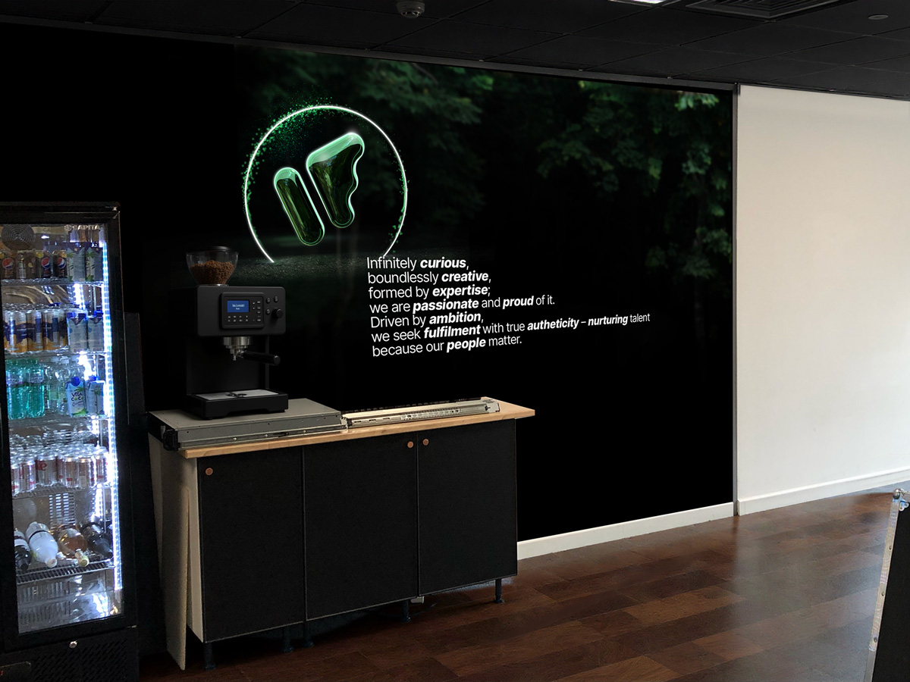
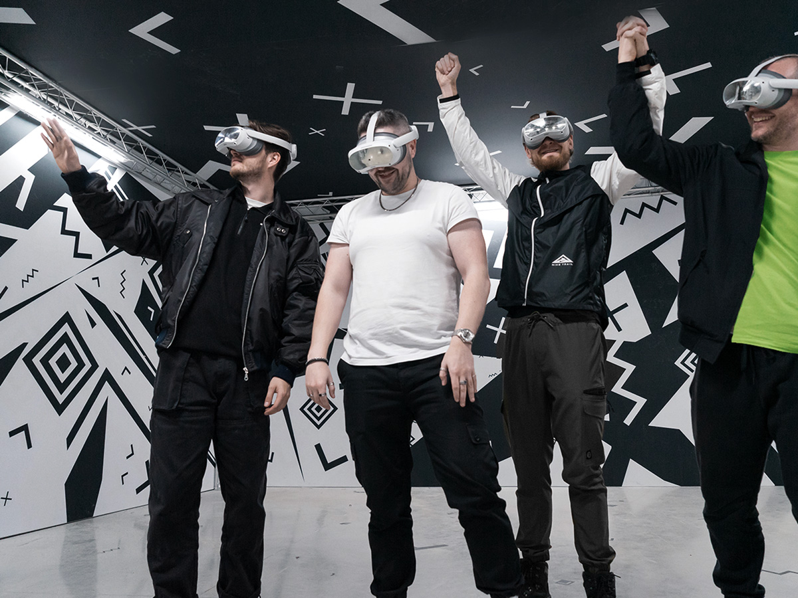
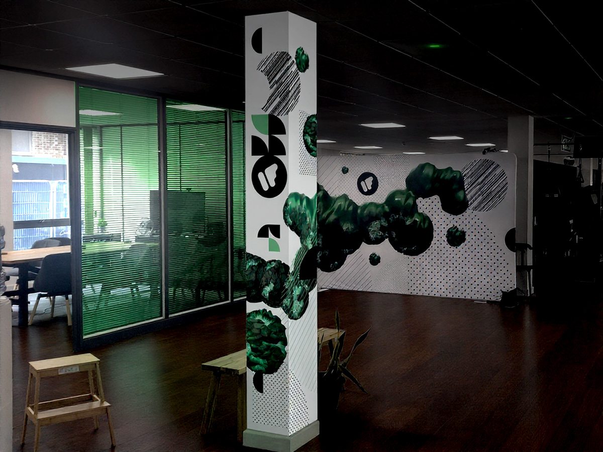
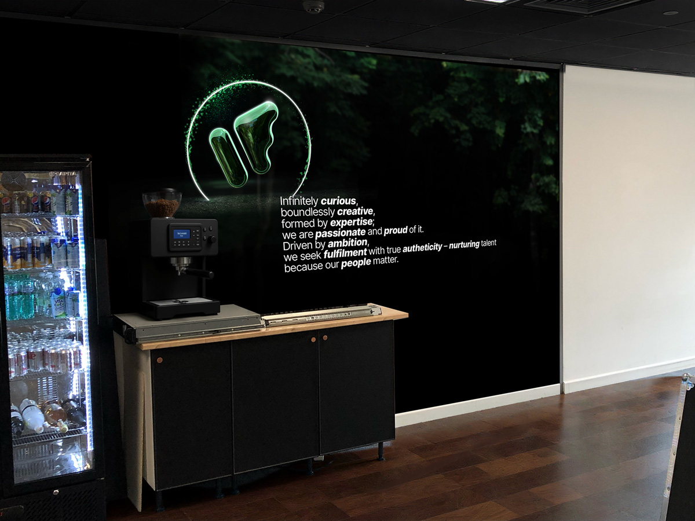
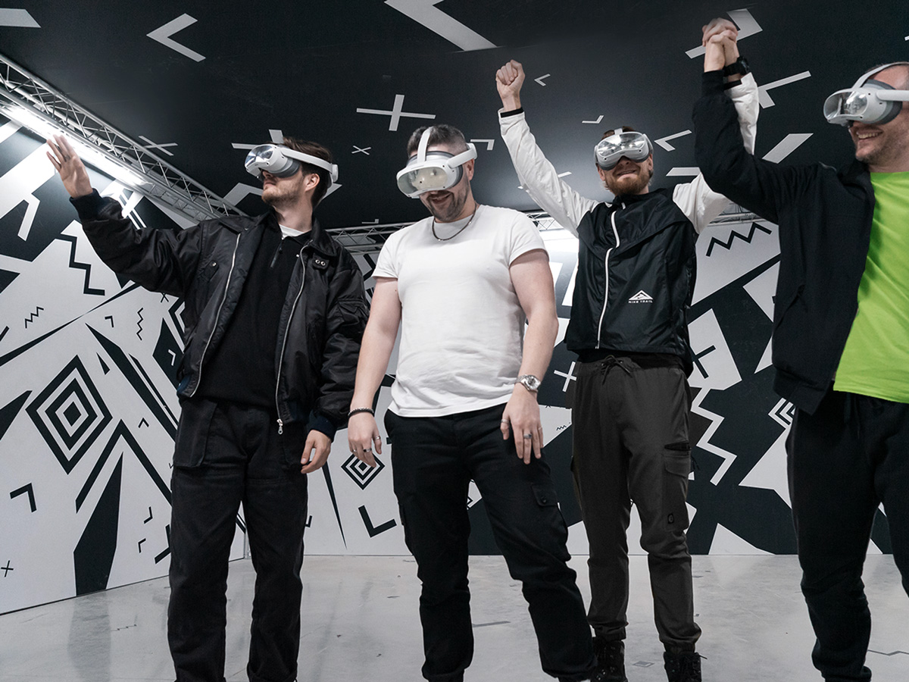

Berry Global
Immersive Event Space
Synthesising new things

Hello! I'm a UK based creative designer specialising in:
Immersive Event Space
Augmented reality product app

Branding & Product direction
Mixed reality automotive museum experience
Some of the many brands I have collaborated with include:
To discuss or arrange a full portfolio viewing contact me below.


 




